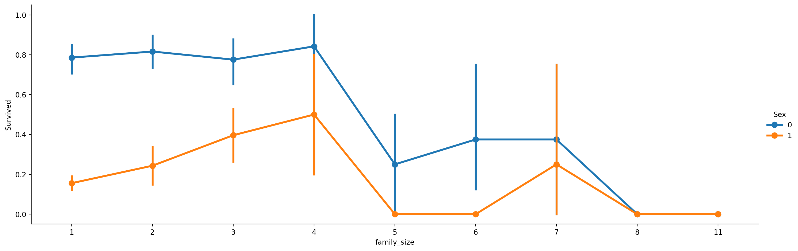

import numpy as np
import pandas as pd
import seaborn as sns
import matplotlib.pyplot as plt
%matplotlib inline
import warnings
warnings.filterwarnings('ignore')Introduction
Welcome to the Titanic Survival Prediction project, a classic challenge that serves as the perfect starting point for anyone looking to dive into the world of Machine Learning and data competitions on Kaggle. This project involves building a predictive model to determine which passengers survived the infamous Titanic disaster, a task that will guide you through essential steps in data science, from feature engineering to model development and evaluation.
This competition is designed to help you get comfortable with the Kaggle platform and machine learning workflows. You’ll be using Python to explore the data, perform feature engineering, visualize key trends, and develop a predictive model that can accurately classify survivors. For more details, visit the competition page and check out Kaggle’s YouTube video for a comprehensive introduction.
- Import Data: Load the Titanic dataset to begin the exploration and analysis.
- Feature Engineering: Transform raw data into meaningful features that improve model performance.
- Data Visualization: Analyze and visualize the data to uncover patterns and insights.
- Model Development: Build and train machine learning models to predict passenger survival.
- Model Testing: Evaluate model accuracy and fine-tune parameters to optimize results.
- Prediction and Submission: Generate survival predictions and submit them to the Kaggle leaderboard.
Embark on this journey to not only enhance your data science skills but also understand the power of predictive modeling in real-world scenarios.
A. Import Data
train = pd.read_csv('../input/titanic/train.csv')
test = pd.read_csv('../input/titanic/test.csv')B. Dataset exploration:
train.head()| PassengerId | Survived | Pclass | Name | Sex | Age | SibSp | Parch | Ticket | Fare | Cabin | Embarked | |
|---|---|---|---|---|---|---|---|---|---|---|---|---|
| 0 | 1 | 0 | 3 | Braund, Mr. Owen Harris | male | 22.0 | 1 | 0 | A/5 21171 | 7.2500 | NaN | S |
| 1 | 2 | 1 | 1 | Cumings, Mrs. John Bradley (Florence Briggs Th... | female | 38.0 | 1 | 0 | PC 17599 | 71.2833 | C85 | C |
| 2 | 3 | 1 | 3 | Heikkinen, Miss. Laina | female | 26.0 | 0 | 0 | STON/O2. 3101282 | 7.9250 | NaN | S |
| 3 | 4 | 1 | 1 | Futrelle, Mrs. Jacques Heath (Lily May Peel) | female | 35.0 | 1 | 0 | 113803 | 53.1000 | C123 | S |
| 4 | 5 | 0 | 3 | Allen, Mr. William Henry | male | 35.0 | 0 | 0 | 373450 | 8.0500 | NaN | S |
B.1. Types of Variables
# Find categorical variables
categorical = [var for var in train.columns if train[var].dtype=='O']
print('There are {} categorical variables'.format(len(categorical)))There are 5 categorical variables# Find numerical variables
numerical = [var for var in train.columns if train[var].dtype!='O']
print('There are {} numerical variables'.format(len(numerical)))There are 7 numerical variablesViewing the Categorical terms :
data = [train,test]
for dataset in data:
#Filter categorical variables
categorical_columns = [x for x in dataset.dtypes.index if dataset.dtypes[x]=='object']
# Exclude ID cols and source:
categorical_columns = [x for x in categorical_columns if x not in ['PassengerId','Ticket','Name','Cabin']]
#Print frequency of categories
for col in categorical_columns:
print ('\nFrequency of Categories for variable %s'%col)
print (train[col].value_counts())
Frequency of Categories for variable Sex
Sex
male 577
female 314
Name: count, dtype: int64
Frequency of Categories for variable Embarked
Embarked
S 644
C 168
Q 77
Name: count, dtype: int64B.2. Detecting Missing Values
train.isnull().sum()PassengerId 0
Survived 0
Pclass 0
Name 0
Sex 0
Age 177
SibSp 0
Parch 0
Ticket 0
Fare 0
Cabin 687
Embarked 2
dtype: int64train.isnull().mean()PassengerId 0.000000
Survived 0.000000
Pclass 0.000000
Name 0.000000
Sex 0.000000
Age 0.198653
SibSp 0.000000
Parch 0.000000
Ticket 0.000000
Fare 0.000000
Cabin 0.771044
Embarked 0.002245
dtype: float64Missing Data Overview
The train dataset has 12 features, with missing values observed in the following features:
- Age: Missing in 19.86% of the records
- Cabin: Missing in 77.10% of the records
- Embarked: Missing in 0.22% of the records
Analysis and Assumptions About Missing Data
Cabin
The Cabin feature has the highest proportion of missing values (77.10%). This substantial amount of missing data might suggest that:
- For many individuals who did not survive, the cabin information was not recorded or available.
- Survivors, on the other hand, may have been able to provide this information.
The missingness here could be due to the nature of the records or circumstances surrounding the individuals who did not survive, making this data likely to fall into the Missing Not At Random (MNAR) category. This means the missingness is related to the unobserved value itself or other factors not accounted for.
Age
The Age feature has missing values in about 22% of the records. This could be due to:
- Missing age information for individuals who did not survive.
- Survivors possibly being able to provide their age when asked.
This type of missing data might also be categorized as Missing Not At Random (MNAR) if the likelihood of missing data is related to whether the individual survived or other unobserved factors.
Embarked
The Embarked feature has a very small proportion of missing values (0.22%). This is a very minor amount and is likely due to random occurrences.
Such a small percentage of missing data is often considered Missing Completely At Random (MCAR), meaning the missingness is unrelated to the observed or unobserved data.
Summary
- Cabin and Age features likely fall into the MNAR category due to possible relationships between missingness and other factors like survival status.
- The Embarked feature’s missing values are likely MCAR, as the missingness appears random and does not correlate with other data aspects.
B.3. Outliers detection
plt.figure(figsize=(8,6))
plt.subplot(1, 2, 1)
fig = train.boxplot(column='Age')
fig.set_title('')
fig.set_ylabel('Age')
plt.subplot(1, 2, 2)
fig = train.boxplot(column='Fare')
fig.set_title('')
fig.set_ylabel('Fare')Text(0, 0.5, 'Fare')plt.figure(figsize=(8,6))
plt.subplot(1, 2, 1)
fig = train.Age.hist(bins=20)
fig.set_ylabel('Number of passengers')
fig.set_xlabel('Age')
plt.subplot(1, 2, 2)
fig = train.Fare.hist(bins=20)
fig.set_ylabel('Number of passengers')
fig.set_xlabel('Fare')Text(0.5, 0, 'Fare')B.3. Analyzing the Embarked feature
train[train.Embarked.isnull()]| PassengerId | Survived | Pclass | Name | Sex | Age | SibSp | Parch | Ticket | Fare | Cabin | Embarked | |
|---|---|---|---|---|---|---|---|---|---|---|---|---|
| 61 | 62 | 1 | 1 | Icard, Miss. Amelie | female | 38.0 | 0 | 0 | 113572 | 80.0 | B28 | NaN |
| 829 | 830 | 1 | 1 | Stone, Mrs. George Nelson (Martha Evelyn) | female | 62.0 | 0 | 0 | 113572 | 80.0 | B28 | NaN |
The Embarked feature, which records the port of embarkation for passengers, has a very small proportion of missing values (0.22%). This low percentage of missing data suggests a specific pattern in how the data might be missing.
Possible Reasons for Missing Values
Consistency Among Passengers: For passengers who share the same ticket, cabin, and fare, it is unlikely that the missing
Embarkeddata is due to discrepancies in their records. This is because passengers with identical ticket and cabin information would typically have consistent embarkation data.Data Generation During Dataset Construction: The missing
Embarkedvalues could have resulted from data entry or construction processes. For example, if data was manually entered or generated, some records might have been incomplete due to errors or omissions during the data preparation phase.
Nature of Missing Data
Given that the missing values in the Embarked feature are minimal and appear to be random rather than systematic, we can categorize this missing data as:
- Missing Completely At Random (MCAR): The missingness of the
Embarkeddata is likely unrelated to both the values of theEmbarkedfeature itself and any other features in the dataset. The small percentage of missing data indicates that these omissions do not follow a discernible pattern and are likely due to random errors in data entry or processing.
In summary, the missing values in the Embarked feature are random and not indicative of any underlying patterns related to the data’s other aspects. This randomness supports the classification of this missing data as MCAR.
B.4. Analyzing Cabin feature
train['cabin_null'] = np.where(train.Cabin.isnull(),1,0)
train.groupby(['Survived'])['cabin_null'].mean()Survived
0 0.876138
1 0.602339
Name: cabin_null, dtype: float64The above figures indicates that the missing data is more in the case of passengers not survived(=0).
There is a systematic loss of data: people who did not survive tend to have more information missing. Presumably, the method chosen to gather the information, contributes to the generation of these missing data.
B.5. Analyzing the Age feature
train['age_null'] = np.where(train.Age.isnull(),1,0)
train.groupby(['Survived'])['age_null'].mean()Survived
0 0.227687
1 0.152047
Name: age_null, dtype: float64There is a systematic loss of data: people who did not survive tend to have more information missing. Presumably, the method chosen to gather the information, contributes to the generation of these missing data.
B.6. Analyzing the Fare feature
The distribution of Fare is skewed, so in principle, we shouldn’t estimate outliers using the mean plus minus 3 standard deviations methods, which assumes a normal distribution of the data.
total_passengers = float(train.shape[0])
print('Total number of passengers: {}'.format(train.shape[0]))
print('Passengers that paid more than 65: {:.2f}%'.format(
(train[train.Fare > 65].shape[0] / total_passengers) * 100))
print('passengers that paid more than 100: {} %'.format((
train[train.Fare > 100].shape[0]/ total_passengers)*100))Total number of passengers: 891
Passengers that paid more than 65: 13.02%
passengers that paid more than 100: 5.948372615039282 %There is unusual high values of Fares observed, the reason is found as follows:
#at the most extreme outliers
train[train.Fare>300]| PassengerId | Survived | Pclass | Name | Sex | Age | SibSp | Parch | Ticket | Fare | Cabin | Embarked | cabin_null | age_null | |
|---|---|---|---|---|---|---|---|---|---|---|---|---|---|---|
| 258 | 259 | 1 | 1 | Ward, Miss. Anna | female | 35.0 | 0 | 0 | PC 17755 | 512.3292 | NaN | C | 1 | 0 |
| 679 | 680 | 1 | 1 | Cardeza, Mr. Thomas Drake Martinez | male | 36.0 | 0 | 1 | PC 17755 | 512.3292 | B51 B53 B55 | C | 0 | 0 |
| 737 | 738 | 1 | 1 | Lesurer, Mr. Gustave J | male | 35.0 | 0 | 0 | PC 17755 | 512.3292 | B101 | C | 0 | 0 |
These three people have the same ticket number, indicating that they were travelling together. The Fare price in this case, 512 is the price of 3 tickets, and not one. This is why, it is unusually high.
B.7. Categorical Values :
print('Number of categories in the variable Name: {}'.format(
len(train.Name.unique())))
print('Number of categories in the variable Gender: {}'.format(
len(train.Sex.unique())))
print('Number of categories in the variable Ticket: {}'.format(
len(train.Ticket.unique())))
print('Number of categories in the variable Cabin: {}'.format(
len(train.Cabin.unique())))
print('Number of categories in the variable Embarked: {}'.format(
len(train.Embarked.unique())))
print('Total number of passengers in the Titanic: {}'.format(len(train)))Number of categories in the variable Name: 891
Number of categories in the variable Gender: 2
Number of categories in the variable Ticket: 681
Number of categories in the variable Cabin: 148
Number of categories in the variable Embarked: 4
Total number of passengers in the Titanic: 891drop_column = ['cabin_null','age_null']
train.drop(drop_column , axis =1 ,inplace = True )C. Feature Scaling and Engineering
Feature scaling is a technique used to standardize the range of independent variables or features of data. In machine learning and data analysis, scaling is important because it helps improve the performance and training stability of models.
C.1. Handling the Missing Values:
The dataset contains missing values in several features. To address these, we apply different strategies based on the nature of each feature:
train.isnull().sum()PassengerId 0
Survived 0
Pclass 0
Name 0
Sex 0
Age 177
SibSp 0
Parch 0
Ticket 0
Fare 0
Cabin 687
Embarked 2
dtype: int64test.isnull().sum()PassengerId 0
Pclass 0
Name 0
Sex 0
Age 86
SibSp 0
Parch 0
Ticket 0
Fare 1
Cabin 327
Embarked 0
dtype: int64data_cleaner = [test , train]
for dataset in data_cleaner:
#completing missing age with median
dataset['Age'].fillna(dataset['Age'].median(), inplace = True)
#completing embarked with mode
dataset['Embarked'].fillna(dataset['Embarked'].mode()[0], inplace = True)
#completing missing fare with median
dataset['Fare'].fillna(dataset['Fare'].median(), inplace = True)
#delete the train feature
train.drop(['Ticket'], axis=1, inplace = True)
test.drop(['Ticket'] , axis=1 , inplace = True)C.2. Encoding
Encoding is a crucial step in data preprocessing, especially for machine learning and statistical modeling. It involves converting categorical variables (features that represent categories or groups) into numerical values that can be processed by machine learning algorithms.
C.2.1. Cabin Feature
drop_column = ['Cabin']
train.drop(drop_column , axis =1 ,inplace = True )
test.drop(drop_column , axis =1 ,inplace = True )The Cabin feature has been dropped from the dataset due to its high proportion of missing values (77.10%), which makes it less informative.
C.2.2. Fare Feature
full_data = [train,test]
for dataset in full_data:
dataset.loc[ dataset['Fare'] <= 7.91, 'Fare_Band'] = 0
dataset.loc[(dataset['Fare'] > 7.91) & (dataset['Fare'] <= 14.454), 'Fare_Band'] = 1
dataset.loc[(dataset['Fare'] > 14.454) & (dataset['Fare'] <= 31), 'Fare_Band'] = 2
dataset.loc[ dataset['Fare'] > 31, 'Fare_Band'] = 3
dataset['Fare_Band'] = dataset['Fare_Band'].astype(int)
dataset.drop(['Fare' ], axis = 1 , inplace =True)The Fare feature has been transformed into discrete fare bands. This transformation categorizes fare amounts into bins, which can simplify the modeling process and potentially reveal patterns.
C.2.3. Age Feature
full_data = [test , train]
for dataset in full_data:
dataset.loc[ dataset['Age'] <= 10, 'Age'] = 0
dataset.loc[(dataset['Age'] > 10) & (dataset['Age'] <= 15), 'Age'] = 1
dataset.loc[(dataset['Age'] > 15) & (dataset['Age'] <= 20), 'Age'] = 2
dataset.loc[(dataset['Age'] > 20) & (dataset['Age'] <= 25), 'Age'] = 3
dataset.loc[(dataset['Age'] > 25) & (dataset['Age'] <= 30), 'Age'] = 4
dataset.loc[(dataset['Age'] > 30) & (dataset['Age'] <= 45), 'Age'] = 5
dataset.loc[(dataset['Age'] > 45) & (dataset['Age'] <= 60), 'Age'] = 6
dataset.loc[ dataset['Age'] > 60, 'Age'] = 7
dataset['Age'] = dataset['Age'].astype(int)The Age feature has been converted into age bins, categorizing age into discrete intervals. This transformation simplifies the feature and can help capture age-related patterns more effectively.
C.2.4. Sex and Embarked Feature
full_data = [test , train]
for dataset in full_data:
dataset['Embarked'] = dataset['Embarked'].map( {'S': 0, 'C': 1, 'Q': 2} ).astype(int)
dataset['Sex'] = dataset['Sex'].map( {'female': 0, 'male': 1} ).astype(int)The categorical features Embarked and Sex have been encoded into numeric values. This encoding converts categorical variables into a format suitable for machine learning models.
C.2.5. Droping the Name feature
train.drop(['Name'],axis = 1, inplace = True)
test.drop(['Name'],axis = 1, inplace = True )The Name feature, which does not provide useful information for modeling, has been removed from both the training and testing datasets.
C.2.6. Family Size
train['family_size'] = train['SibSp'] + train['Parch'] + 1
test['family_size'] = test['SibSp'] + test['Parch'] + 1
test['IsAlone'] = 1
train['IsAlone'] = 1
train['IsAlone'].loc[train['family_size'] > 1] = 0
test['IsAlone'].loc[test['family_size'] > 1] = 0
test.drop(['SibSp' , 'Parch'], axis = 1 , inplace =True)
train.drop(['SibSp','Parch' ], axis = 1 , inplace =True)A new feature, family_size, is created by combining SibSp (siblings/spouses aboard) and Parch (parents/children aboard). This feature provides insight into the size of the family traveling with the passenger.
test.isnull().sum()PassengerId 0
Pclass 0
Sex 0
Age 0
Embarked 0
Fare_Band 0
family_size 0
IsAlone 0
dtype: int64D. Visualizations
Let’s get some insights !
g = sns.FacetGrid(train, col="Survived", row="Sex", hue="Embarked", height=3)
g.map(plt.hist, "Pclass", edgecolor="w").add_legend()- Observations
- From above graph we observe that more number of females survived as compared to males. The female survivors were more from the first class and male from third class were the most to die.
- The 3rd class people were the most affected, that is they less survived where as 1st class people survived is maximum than others.
- The second class has almost equal survived and couldn’t survive number of people. And also we notice many of the passengers Embarked from “S”.
plt.figure(figsize = [8,5])
sns.violinplot(x="Fare_Band", y="Age", data=train, hue='Survived',palette='coolwarm')Mostly farebands are greater at the Age Group “4”. Survival also has greater area corresponding to age group “4”.
train[['family_size', 'Survived']].groupby(['family_size'], as_index=False).mean()| family_size | Survived | |
|---|---|---|
| 0 | 1 | 0.303538 |
| 1 | 2 | 0.552795 |
| 2 | 3 | 0.578431 |
| 3 | 4 | 0.724138 |
| 4 | 5 | 0.200000 |
| 5 | 6 | 0.136364 |
| 6 | 7 | 0.333333 |
| 7 | 8 | 0.000000 |
| 8 | 11 | 0.000000 |
axes = sns.catplot(x='family_size', y='Survived', hue='Sex', data=train, aspect=3, kind='point')
We find with increase in family size the survival rate decreases.
plt.figure(figsize=(10,10))
sns.heatmap(train.drop('PassengerId',axis=1).corr(), square=True, annot=True)- Undestanding the Correlation matrix:
- The FareBand and Pclass are highly correlated(-0.63) although negative, next to them is FareBand and IsAlone correlation(-0.57).
- The Sex and Survived also have good correlation of (-0.54).
- But as observed IsAlone and Family_size has the largest negative correlation (-0.69) is liable as the Family size and being alone are two opposite categories.
E. Model Training and Predicting
Spitting the data in ro train and test
X = train.drop('Survived' , axis = 1 )
y = train['Survived']
from sklearn.model_selection import train_test_split
X_train ,X_test , y_train , y_test = train_test_split(X , y , test_size = 0.3 , random_state =102)Also we need to remove Id of passengers for prediction,
X_train=X_train.drop(['PassengerId'],axis=1)
X_test = X_test.drop(['PassengerId'],axis=1)Importing models from scikit learn module. The objective is to classify the passenger survivior into two classes: 0 or 1, hence this is a binary classification for which we will be using classifiers. Following part of this notebook compares and finds the best model suitable for the data based upon accuracy metrics.
#Importing all models
from sklearn.linear_model import LogisticRegression, SGDClassifier
from sklearn.tree import DecisionTreeClassifier
from sklearn.svm import SVC
from sklearn.ensemble import RandomForestClassifier
from sklearn.neighbors import KNeighborsClassifier
from sklearn.naive_bayes import GaussianNB
from sklearn.preprocessing import StandardScaler
from sklearn.metrics import accuracy_scoreE.1. Logistic Regression
logmodel = LogisticRegression()
logmodel.fit(X_train , y_train)
pred_l = logmodel.predict(X_test)
acc_l = accuracy_score(y_test , pred_l)*100
acc_l79.1044776119403E.2. Random Forest
random_forest = RandomForestClassifier(n_estimators= 100)
random_forest.fit(X_train, y_train)
pred_rf = random_forest.predict(X_test)
acc_rf = accuracy_score(y_test , pred_rf)*100
acc_rf83.2089552238806E.3. K-Nearest Neighbours
knn = KNeighborsClassifier(n_neighbors = 3)
knn.fit(X_train, y_train)
pred_knn = knn.predict(X_test)
acc_knn = accuracy_score(y_test , pred_knn)*100
acc_knn79.8507462686567E.4. Gaussian Naive Bayes Classifier
gaussian = GaussianNB()
gaussian.fit(X_train, y_train)
pred_gb = gaussian.predict(X_test)
acc_gb = accuracy_score(y_test , pred_gb)*100
acc_gb77.98507462686567E.5. C-Support Vector Classifier
svc = SVC()
svc.fit(X_train, y_train)
pred_svc = svc.predict(X_test)
acc_svc = accuracy_score(y_test , pred_svc)*100
acc_svc84.70149253731343E.6. Decision Tree
decision_tree = DecisionTreeClassifier()
decision_tree.fit(X_train, y_train)
pred_dt = decision_tree.predict(X_test)
acc_dt = accuracy_score(y_test , pred_dt)*100
acc_dt81.34328358208955E.7. Linear classifiers with SGD training.
sgd = SGDClassifier()
sgd.fit(X_train, y_train)
pred_sgd = sgd.predict(X_test)
acc_sgd = accuracy_score(y_test , pred_sgd)*100
acc_sgd73.13432835820896## Arranging the Accuracy results
models = pd.DataFrame({
'Model': ['Logistic Regression', 'Random Forrest','K- Nearest Neighbour' ,
'Naive Bayes' , 'C-Support Vector Classifier' , 'Decision Tree' , 'Stochastic Gradient Descent'],
'Score': [acc_l , acc_rf , acc_knn , acc_gb , acc_svc ,
acc_dt , acc_sgd]})
models.sort_values(by='Score', ascending=False)| Model | Score | |
|---|---|---|
| 4 | C-Support Vector Classifier | 84.701493 |
| 1 | Random Forrest | 83.208955 |
| 5 | Decision Tree | 81.343284 |
| 2 | K- Nearest Neighbour | 79.850746 |
| 0 | Logistic Regression | 79.104478 |
| 3 | Naive Bayes | 77.985075 |
| 6 | Stochastic Gradient Descent | 73.134328 |
Ensemble Learning
df_test = test.drop(['PassengerId'],axis=1)
p_l = logmodel.predict(df_test)
p_svc = svc.predict(df_test)
p_rf = random_forest.predict(df_test)
p_dt = decision_tree.predict(df_test)predict_combine = np.zeros((df_test.shape[0]))
for i in range(0, test.shape[0]):
temp = p_rf[i]+p_svc[i]+p_l[i]+p_dt[i]
if temp>=2:
predict_combine[i] = 1
predict_combine = predict_combine.astype('int')Submission
submission = pd.DataFrame({
"PassengerId": test["PassengerId"],
"Survived": predict_combine
})
submission.to_csv("submission.csv", encoding='utf-8', index=False)submission.head()| PassengerId | Survived | |
|---|---|---|
| 0 | 892 | 0 |
| 1 | 893 | 0 |
| 2 | 894 | 0 |
| 3 | 895 | 0 |
| 4 | 896 | 1 |
Thankyou!
- Kaggle: Notebook
- Resources: Udemy Course, Scikit-Learn docs